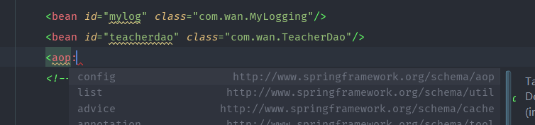
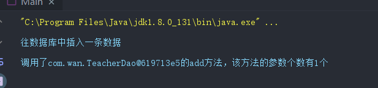

面向切面编程AOP与面向对象编程OOP有所不同，AOP不是对OOP的替换，而是对OOP的一种补充，AOP增强了OOP。
假设我们有几个业务代码，都调用了某个方法，按照OOP的思想，我们就会将此方法封装在一个类中，之后通过对象.方法名调用
我们可以看作我们的业务代码被其他代码入侵或者是业务代码被其他与业务不相关的代码入侵了
这个时候，如果我们使用AOP进行编写代码，我们的业务代码就可以不需要写其他与业务相关的代码，这样就可以保证业务代码的纯洁性
通过配置文件，给各个业务方法标识切入点（PointCut），即切入点方法。
之后当程序运行到切入点方法的时候，就会发出一个通知（Advice），去通知执行某个切面方法（Aspect）
| 项 | 描述 |
|---|---|
| Aspect | 一个模块具有一组提供横切需求的 APIs。例如，一个日志模块为了记录日志将被 AOP 方面调用。应用程序可以拥有任意数量的方面，这取决于需求。 |
| Join point | 在你的应用程序中它代表一个点，你可以在插件 AOP 方面。你也能说，它是在实际的应用程序中，其中一个操作将使用 Spring AOP 框架。 |
| Advice | 这是实际行动之前或之后执行的方法。这是在程序执行期间通过 Spring AOP 框架实际被调用的代码。 |
| Pointcut | 这是一组一个或多个连接点，通知应该被执行。你可以使用表达式或模式指定切入点正如我们将在 AOP 的例子中看到的。 |
| Introduction | 引用允许你添加新方法或属性到现有的类中。 |
| Target object | 被一个或者多个方面所通知的对象，这个对象永远是一个被代理对象。也称为被通知对象。 |
| Weaving | Weaving 把方面连接到其它的应用程序类型或者对象上，并创建一个被通知的对象。这些可以在编译时，类加载时和运行时完成。 |
| 通知 | 类型 |
|---|---|
| 前置通知（Before Advice） | 在切入点方法执行之前，执行通知 |
| 环绕通知（Around Advice） | 在切入点方法执行的整个过程都可以执行通知 |
| 后置通知（After Returning Advice） | 在切入点方法执行之后，只有在方法成功执行时，才能执行通知。 |
| 最终通知（After Finally Advices） | 在一个方法执行之后，不管是方法是否成功执行 ，执行通知 |
| 异常通知（After Throwing Advice） | 在一个方法执行之后，只有在方法退出抛出异常时，才能执行通知。 |
PS：其实，这些通知就是相当于你可以在业务方法的执行前（前置通知）、执行中（环绕通知）、执行成功之后（后置通知）、发生异常（异常通知）、不管方法是发生异常还是执行成功（最终通知），执行某些与业务功能无关的功能代码。
这样就可以降低业务功能代码的入侵和污染
下面使用两种不同的方式来实现一个方法日志打印的简单例子
下面的通知是基于xml配置的
除了之前的spring的jar包，还需要两个jar包，aopalliance.jar和aspectjweaver.jar
<dependency>
<groupId>junit</groupId>
<artifactId>junit</artifactId>
<version>4.11</version>
<scope>test</scope>
</dependency>
<dependency>
<groupId>commons-logging</groupId>
<artifactId>commons-logging</artifactId>
<version>RELEASE</version>
</dependency>
<dependency>
<groupId>org.springframework</groupId>
<artifactId>spring-context</artifactId>
<version>RELEASE</version>
</dependency>
<dependency>
<groupId>org.springframework</groupId>
<artifactId>spring-test</artifactId>
<version>RELEASE</version>
</dependency>
<dependency>
<groupId>org.springframework</groupId>
<artifactId>spring-core</artifactId>
<version>RELEASE</version>
</dependency>
<dependency>
<groupId>org.springframework</groupId>
<artifactId>spring-beans</artifactId>
<version>RELEASE</version>
</dependency>
<dependency>
<groupId>org.springframework</groupId>
<artifactId>spring-aop</artifactId>
<version>RELEASE</version>
</dependency>
<dependency>
<groupId>org.springframework</groupId>
<artifactId>spring-expression</artifactId>
<version>RELEASE</version>
</dependency>
<!-- aop需要的jar -->
<dependency>
<groupId>org.aspectj</groupId>
<artifactId>aspectjweaver</artifactId>
<version>RELEASE</version>
</dependency>
<dependency>
<groupId>aopalliance</groupId>
<artifactId>aopalliance</artifactId>
<version>RELEASE</version>
</dependency>我编写了一个TeacherDao类，里面只有add和delete方法
package com.wan;
/**
* @author StarsOne
* @date Create in 2019/9/25 0025 16:34
* @description
*/
public class TeacherDao {
public void add(Teacher teacher) {
System.out.println("往数据库中插入一条数据");
}
public void delete(Teacher teacher) {
System.out.println("从数据库中删除一条数据");
}
}
前面说过了通知具有五种类型，我们根据需要，选择合适的通知类型，让某个类实现通知对应的接口，这里其实就是相当于编写切面方法
| 通知类型 | 接口 | 接口方法 | 接口方法参数说明 |
|---|---|---|---|
| 前置通知 | org.springframework.aop.MethodBeforeAdvice | before(Method method, Object[] args, Object target) | method是方法，args是方法的参数，target是目标对象 |
| 环绕通知 | org.aopalliance.intercept.MethodInterceptor | invoke(MethodInvocation invocation) | invocation对象中包含有method，方法参数和目标对象 |
| 后置通知 | org.springframework.aop.AfterReturningAdvice | afterReturning(Object returnValue, Method method, Object[] args, Object target) | returnValue是方法的返回值，其他的参数和前置通知一样 |
| 最终通知 | org.springframework.aop.AfterAdvice | 无 | 无 |
| 异常通知 | org.springframework.aop.ThrowsAdvice | 无 | 无 |
我们日志输出，选择后置通知，也就是方法执行完成之后调用
MyLogging.java
package com.wan;
import org.aopalliance.intercept.MethodInterceptor;
import org.aopalliance.intercept.MethodInvocation;
import org.springframework.aop.AfterReturningAdvice;
import org.springframework.aop.MethodBeforeAdvice;
import java.lang.reflect.Method;
/**
* @author StarsOne
* @date Create in 2019/9/25 0025 16:53
* @description
*/
public class MyLogging implements AfterReturningAdvice {
@Override
public void afterReturning(Object returnValue, Method method, Object[] args, Object target) throws Throwable {
String methodName = method.getName();//方法名
int size = args.length;//参数个数
System.out.println("调用了"+target+"的"+methodName+"方法，该方法的参数个数有"+size+"个");
}
}
<?xml version="1.0" encoding="UTF-8"?>
<beans xmlns="http://www.springframework.org/schema/beans"
xmlns:xsi="http://www.w3.org/2001/XMLSchema-instance"
xmlns:aop="http://www.springframework.org/schema/aop"
xsi:schemaLocation="http://www.springframework.org/schema/beans http://www.springframework.org/schema/beans/spring-beans.xsd http://www.springframework.org/schema/aop https://www.springframework.org/schema/aop/spring-aop.xsd">
<bean id="mylog" class="com.wan.MyLogging"/>
<bean id="teacherdao" class="com.wan.TeacherDao"/>
<aop:config>
<aop:pointcut id="mypointcut" expression="execution(public void add(com.wan.Teacher))"/>
<aop:advisor advice-ref="mylog" pointcut-ref="mypointcut"/>
</aop:config>
</beans>这里和之前一样，也需要引用aop命名空间，IDEA可以智能帮我们导入，输入<aop:，之后就会弹出提示

各元素和属性说明：
| 子元素/属性 | 含义 |
|---|---|
| aop:pointcut | 切入点，当执行当切入点方法的时候，就会根据通知（Advice）的类型，从而执行非业务功能的代码 |
| id | 切入点的唯一表示，下面pointcut-ref属性需要引用此id |
| expression | 表达式，只要是符合此表达式的方法，都会被当作切入点 |
| aop:advisor | 通知 |
| pointcut-ref | 引用切入点的id |
| advice-ref | 引用切入点接口类的bean的id |
补充，关于expression的例子：
| 例子 | 说明 |
|---|---|
| public boolean addTeacher(com.wan.Teacher) | 所有返回类型为boolean，参数类型为com.wan.Teacher，方法名为addTeacher的方法 |
| public void com.wan.TeacherDao.add(com.wan.Teacher) | 方法存在TeacherDao类中，返回类型为空，参数类型为Teacher，方法名为add的方法 |
| public * addTeacher(com.wan.Teacher) | 所有返回类型为任意类型，参数类型为com.wan.Teacher，方法名为addTeacher的方法 |
| public boolean *(com.wan.Teacher) | 所有返回类型为任意类型，参数类型为Teacher,方法名任意的方法 |
| public boolean addTeacher(..) | 所有返回类型为任意类型，参数类型和个数不限，方法名为addTeacher的方法 |
| * com.wan.*.*(..) | 在com.wan包下面的所有方法（不包括子包） |
| * com.wan..*.*(..) | 在com.wan包下面的所有方法（包括子包） |
表达式要写在execution()的括号里面，多个条件可以使用or连接
ClassPathXmlApplicationContext context = new ClassPathXmlApplicationContext("spring-config.xml");
TeacherDao teacherdao = (TeacherDao) context.getBean("teacherdao");
teacherdao.add(new Teacher());
前置通知和后置通知一样，也是实现对应的接口，然后重写before方法，这里就不过多说明了
异常通知有点特殊，因为此接口是不需要重写方法的，但是，我们想要实现异常通知，得按照它定义的规则来
afterThrowing([Method method,Object[] args,Object target],Throwable ex)此通知是spring的最强扩展，因为环绕通知可以拦截方法，对方法的传入参数的数值、返回值进行更改，或者是决定方法是否执行，也可以对目标进行异常处理。
如果对破解有所了解的话，环绕通知还可以被称为hook，像Android的Xposed框架就是通过hook原理，来达到自由更改系统目的。
实现MethodInterceptor接口，重写其的invoke方法
invoke方法可以获得像之前的前置通知的三个参数，method，target，args，也可以获得返回值returnValue
package com.wan;
import org.aopalliance.intercept.MethodInterceptor;
import org.aopalliance.intercept.MethodInvocation;
import org.springframework.aop.AfterReturningAdvice;
import org.springframework.aop.MethodBeforeAdvice;
import java.lang.reflect.Method;
/**
* @author StarsOne
* @date Create in 2019/9/25 0025 16:53
* @description
*/
public class MyLogging implements MethodInterceptor {
@Override
public Object invoke(MethodInvocation invocation) throws Throwable {
Object target = invoke.getThis();
Method method = invoke.getMethod();
Object[] args = invoke.getArguments();
//执行方法，获得返回值
Object returnValue = invoke.proceed();
}
}
上面说的几个例子都是基于xml配置文件，我们可以使用注解，从而达到简化的目的
| 注解 | 说明 |
|---|---|
| @Aspect | 标注切入点 |
| @Before | 标注前置通知 |
| @Around | 标注环绕通知 |
| @AfterReturning | 标注后置通知 |
| @After | 标注最终通知 |
| @AfterThrowing | 标注异常通知 |
<?xml version="1.0" encoding="UTF-8"?>
<beans xmlns="http://www.springframework.org/schema/beans"
xmlns:xsi="http://www.w3.org/2001/XMLSchema-instance"
xmlns:aop="http://www.springframework.org/schema/aop"
xsi:schemaLocation="http://www.springframework.org/schema/beans http://www.springframework.org/schema/beans/spring-beans.xsd http://www.springframework.org/schema/aop https://www.springframework.org/schema/aop/spring-aop.xsd">
<bean id="teacherdao" class="com.wan.TeacherDao"/>
<aop:aspectj-autoproxy/>
<bean class="com.wan.MyLogging"/>
</beans>之后的测试代码和之前的一样
package com.wan;
import org.aspectj.lang.annotation.Aspect;
import org.aspectj.lang.annotation.Before;
/**
* @author StarsOne
* @date Create in 2019/9/25 0025 16:53
* @description
*/
@Aspect
public class MyLogging {
@Before("execution(public void add(com.wan.Teacher))")
public void sayHello() {
System.out.println("这是前置通知");
}
}注解使用挺简单的，大概看一下示例代码就能知道怎么使用了
AOP中有个JoinPoint的接口，此接口可以获得target、args、method这三个参数
| 方法名 | 说明 |
|---|---|
| getTarget() | 获得目标对象 |
| getSignature() | 获得目标方法的Signature对象，由此对象的getName可以获得方法名 |
| getArgs() | 获得参数列表 |
package com.wan;
import org.aspectj.lang.annotation.Aspect;
import org.aspectj.lang.annotation.Before;
/**
* @author StarsOne
* @date Create in 2019/9/25 0025 16:53
* @description
*/
@Aspect
public class MyLogging {
@AfterReturning(pointcut="execution(public boolean add(com.wan.Teacher))",returning="returnValue")
public void test(JoinPoint jp,Object returnValue) {
//上面的注解的returning属性把方法的返回值赋值给了参数returnValue
}
}环绕通知有个特殊的接口ProceedingJoinPoint，此接口是JoinPoint的子接口，比JoinPoint接口多了一个proceed方法，用于执行目的对象的方法获得返回值
package com.wan;
import org.aspectj.lang.annotation.Aspect;
import org.aspectj.lang.annotation.Before;
/**
* @author StarsOne
* @date Create in 2019/9/25 0025 16:53
* @description
*/
@Aspect
public class MyLogging {
@Around("execution(public boolean add(com.wan.Teacher))")
public void test(ProceedingJoinPoint jp) {
Object returnValue = jp.proceed();
}
}package com.wan;
import org.aspectj.lang.annotation.Aspect;
import org.aspectj.lang.annotation.Before;
/**
* @author StarsOne
* @date Create in 2019/9/25 0025 16:53
* @description
*/
@Aspect
public class MyLogging {
@AfterThorwing(pointcut="execution(public boolean add(com.wan.Teacher))",throwing="e")
public void test(JoinPoint jp,NullPointException e) {
//上面的注解的throwing属性把异常赋值给了参数e
//参数中指定了异常为空指针异常，所有，发生异常为空指针异常时候，异常通知才会调用此方法
}
}PS：除以上两种方式可以实现AOP，还有一种使用Schema进行配置，我看了一下步骤，觉得比上面两种还要繁琐，在这里就补充了